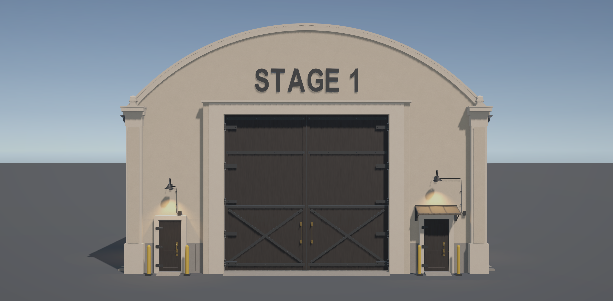

Revision 04 follow-up · Stopped for review
Gutter and eave clearance
Supported open gutters, falling eave aprons and connected hollow downpipes. Both runs and all four transitions are shown in the actual Unity rendering setup.
Six original and twenty-six corrected native Unity captures. Click any image for full resolution. Images are unretouched.
Hero side — front transition
Hero side — rear transition
Opposite side — front transition
Opposite side — rear transition
Front

Corrected Unity candidate Approved concept — unchanged reference
Approved concept — unchanged reference